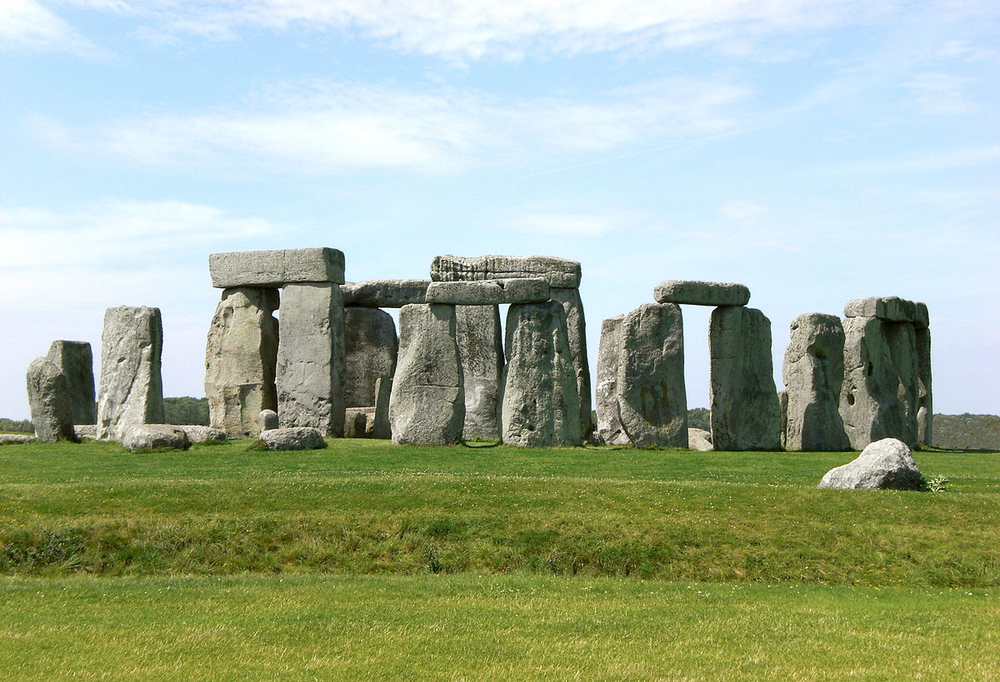

الحمّامات الرومانية التقليدية

بُني المعبد في الموقع في العقود القليلة الأولى لبريطانيا الرومانية بين الأعوام (60 – 70) ميلادية. وأدى وجوده إلى تنمية مستوطنة رومانية صغيرة تعرف باسم أكوا سوليس حول الموقع ذاته. وقد صُممت الحمامات الرومانية للاستخدام العام حتى نهاية الحكم الروماني في بريطانيا في القرن الخامس الميلادي. وفقًا لأنجلو ساسكون كرونكيل فقد وجدت الحمامات الرومانية في حالة خراب بعد قرن من الزمان. وأُعيد بناء المنطقة المحيطة بالينابيع عدة مرات في العصور الوسطى المبكرة والمتأخرة
بوسع الزوار دخول الحمامات و التجول في المتحف ولكن لا يمكنهم دخول المياه
المتحف البريطاني

المتحف البريطاني في منطقة بلومزبري بلندن، المملكة المتحدة، هو متحف ومؤسسة عامة مكرسة لتاريخ البشرية والفن والثقافة. تعد مجموعة المتحف الدائمة التي تضم حوالي ثمانية ملايين عمل فني من بين الأكبر والأكثر شمولاً في العالم، وتم الحصول على أغلبها خلال عصر الإمبراطورية البريطانية. يوثق المتحف قصة الثقافة البشرية من بدايتها حتى الوقت الحاضر. وهو أقدم متحف وطني عام في العالم. يعد مبنى المتحف من أبرز الأمثلة على طراز الإحياء الإغريقي
ستونهنج

هو أثر صخري من نوع كرومليش يرجع لعصر ما قبل التاريخ في سهل ساليسبري بمقاطعة ويلتشير جنوب غرب إنجلترا. يرجع تاريخه لأواخر العصر الحجري وأوائل العصر البرونزي (3000 ق.م.- 1000 ق.م.). وهذا الأثر رغم شهرته حالياً أصبح أطلالاً. ويتكون من مجموعة دائرية من أحجار كبيرة قائمة محاطة بتل ترابي دائري. ويعتبر ستونهنج من أكثر الأثار الحجرية الضخمة شهرةً وحفاظاً في أوروبا. ضمت اليونسكو ستونهنج وفبوري والموقع المحيط في عام 1986 إلى قائمة التراث الثقافي العالمي
سور هادريان

هو سور حجري وتحصينات بناها الإمبراطور الروماني هادريان سنة[122م] بعرض إنجلترا الحالية. وكان الثاني من ثلاثة أسوار بنيت عبر إنجلترا الأول كان سلسلة تلال جاسك والثاني هو سور أنطونيوس. وبنيت الثلاثة الأسوار لصد الغارات العسكرية من القبائل القديمة قبائل بكتاش
الجدير بالذكر أن سور هادريان الأكثر شهرة بين الثلاثة أسوار نظراً لوجوده حتى يومنا هذا
سكارا براي

هو اسم موقع أثري من الحجارة يعود إلى العصر الحجري الحديث في خليج سكيل
يتكون الموقع من ثمانية منازل متلاصقة، التي يعود تاريخ بنائها إلى الفترة ما بين 3180 - 2500 قبل الميلاد، وهي بذلك أقدم قرية كاملة تعود إلى العصر الحجري في أوروبا
أضيف موقع سمارا براي إلى لائحة مواقع التراث العالمي لمنظمة اليونسكو، وذلك كواحد من أربعة مواقع تشكل قلب أوركني النيوليتي
قلعة ويندسور

تتربّع أقدم وأكبر قلعة مأهولة في العالم والتي كانت مقرّاً ملكياً لحوالي 950 عاماً غرب مدينة لندن. بدأ العمل على تشييد قلعة ويندسور على عهد وليام الفاتح في القرن الحادي عشر
عندما كانت البلاد تعيش في سلام، القلعة اتسع نطاقها من الإضافات الكبيرة والشقق الكبرى ؛ عندما كان البلد في حالة حرب، كانت القلعة محصنه بكثافه أكبر. وقد استمرت هذا النمط حتى يومنا هذا